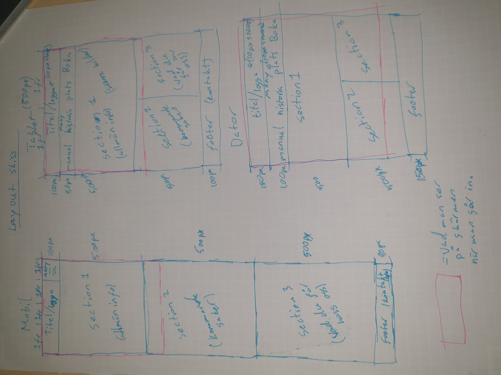
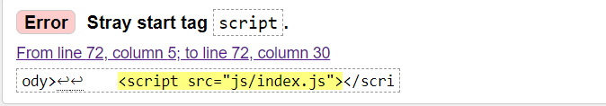

Dokumentation projekt Vt
1. Idébeskrivning
GSD hemsida - Buratino Hemsidan ska vara för att kunna hitta information om lokalen samt guider till till ex. larmet och mixerbordet.
Målgruppen ligger mellan 18 - 70 år men oftast för personer runt 40 - 50 år. Med en stor målgrupp behöver den vara mycket lättanvändig för alla oavsätt ålder eller hur van man är vid teknik.
2. Planering
2.1 Handskiss

2.2 Schema
| Vecka | På lektionen | Utanför lektionen |
| 4 |
|
|
| 5 |
|
|
| 6 |
|
|
| 7 |
|
|
| 8 |
|
|
| 9 |
|
|
| 10 |
|
|
| 11 |
|
|
| 12 |
|
|
3. Dokumentation
Lektion vecka 4
Lektion vecka 5
Jag gjorde en skiss för hur min hemsida ska se ut samt fixade loggan till hemsidan på photoshop. Hade lite problem med att få loggans bakgrund transparent men efter lite googling fick jag det att funka. Efter det hade jag lite problem med att byta färgen till vit från den röda som fanns i orginalet. Jag tar med mig mina kunskaper som jag fick lära in igen eftersom det var ett bra tag sedan jag arbetade med photoshop senast.
Lektion vecka 6
Lektion vecka 8
Var sjuk
Lektion vecka 9
Har fixat en hamburgarmeny med 4 olika menyer. Hamburgarmenyn ska bara finnas på mobilversionen och detta ska jag fixa nästa gång. Jag hade lite problem med att få allt i rätt storlek men efter att ha kollat närmare på de såg jag att brädden på dropdown menyn var 30% medans menyn var 25%. Fixade det och när jag sedan försökte få min logga på rätt plats fick jag stora problem med det. Fick dock hjälp av Noah som visade mig att flex är bättre i vissa fall som detta. Jag fick sedan problem med storleken men det fixade jag genom att använda mig av px istället för % som ställde till med problem.
Lektion vecka 10
fixade en hemknapp i ps och lade sedan in den på sidan samt länkade den så att man allti kom till förstasidan vid tryck på den. Började sedan fixa med media queris så att sidan ska ändras beroende på hur stort fönset är uppet.
Lektion vecka 11
fick stora problem med media queris idag med att sidan blev uppdelad en mycket större grid än tängt men fixade det senare efter några svordomar och hot mot datorn(no computer were harmed). Gjorde så att min burger slutade synas vilket var menat och lade navbaren på rätt ställe.
Lektion vecka 12
All text på sidan har börjat att läggas in samt fixat några grejer med media queris. Kopierade in första sidan till de andra 4 men ändrade stoffen på sidorna. Fixade också desktop versionen med media queris så att sidan änrdas något.
4. Testning
kompletering testning
Jag testade mina html dokument och fick ett problem med hur jag lade in mitt js. Visad på bilden.
Vet ej vad problemet är men scriptet fungerade på sidan så vet ej om det också behöver fixas. Gjorde testet på W3's sida med alla html dokumenten. Jag stötte på samma problem på alla sidor men som jag sagt så är det inget problem när man kollar på själva sidan. Jag gjorde css-valideringen på W3 också och fick att det inte var några fel på koden.  Fixade problemet med att vissa filer hade stora boxtäver i början samt en använde sig av åäö.
Fixade problemet med att vissa filer hade stora boxtäver i början samt en använde sig av åäö.
5. Utvärdering